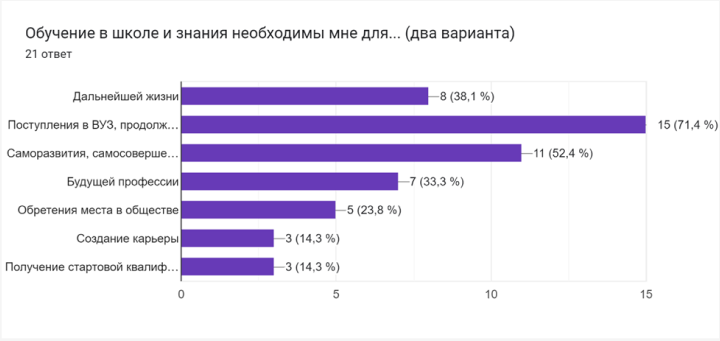
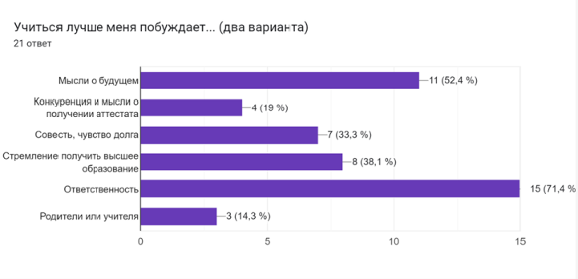

В наше время довольно большой проблемой в обучении является нежелание детей учиться, их уровень мотивации.
Как выяснилось из опроса, проведенного нами среди учеников десятых и одиннадцатых классов, далеко не все учащиеся имеют высокую мотивацию к обучению. Многие ходят в школу ради общения с друзьями или потому что родители заставляют их делать это. Перед нами стояла задача выяснить уровень мотивации среди учеников старшей школы. С помощью нашего исследования учителям и родителям будет проще повысить мотивацию и, соответственно, успеваемость старшеклассников.
Терминология:
Мотива́ция (от лат. movēre «двигать») — побуждение к действию; психофизиологический процесс, управляющий поведением человека, задающий его направленность, организацию, активность и устойчивость; способность человека деятельно удовлетворять свои потребности.
Внешняя мотивация — мотивация, не связанная с содержанием определённой деятельности, но обусловленная внешними по отношению к субъекту обстоятельствами.
Внутренняя мотивация - мотивация, связанная не с внешними обстоятельствами, а с самим содержанием деятельности
Мотивация учения (учебная мотивация) – частный вид мотивации, включённый в учебную деятельность.
Мы провели несколько опросов, которые основываются на методике М. И. Лукьяновой. Данная методика представляет собой тест, в котором каждый вопрос имеет определенное количество баллов. По прохождении теста баллы суммируются и по шкале, которая разработана специально для теста, можно понять уровень своей мотивации, а впоследствии самостоятельно определить и заполнить пробелы.
Проведя несколько опросов среди учеников 10-11 классов, выяснилось, что большинство ходит в школу для:
· Общения с друзьями
· Подготовки к сдаче ЕГЭ или поступления в ВУЗ
· Удовлетворения родительского контроля
При этом уровень по шкале варьируется от "очень высокого" до "сниженного".
 Сумма баллов итогового уровня мотивации.
– очень высокий уровень мотивации учения (72–85);
– нормальный (средний) уровень мотивации учения (42–54);
– сниженный уровень мотивации учения (30–41);
– низкий уровень мотивации учения (до 29).
"https://anketolog.ru/s/687218/n7nYJEOk"
Расшифровка
учебный мотив (ориентация на получение знаний)
социальный мотив (главная цель мотива – коммуникативная)
позиционный мотив (желание занять определенную позицию в глазах педагогов, родителей, сверстников (не быть хуже других))
оценочный мотив (главная цель – получение оценок)
игровой мотив (главная цель мотива - игра со сверстниками)
внешний мотив (привлекают внешние атрибуты школьника, учащийся понимает, что в школу ходить надо.
Источники: книги по психологии, Немов “Психология”